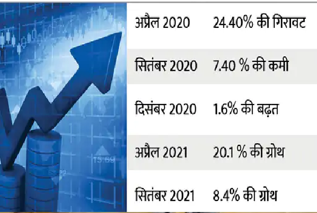
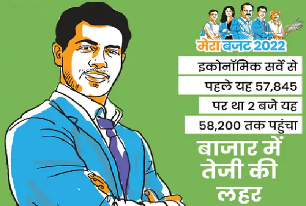

CURRENT-AFFAIRS JAN 31, 2022
1. Johnson will go to Ukraine tomorrow: Britain's PM going to Kiev amid fears of war, bluntly pull Putin back from the border
There is a possibility of war between Ukraine and Russia. Britain, America and NATO countries are pressuring Russia to give up its intention to attack Ukraine. Meanwhile, British Prime Minister Boris Johnson has decided to visit Ukraine on Tuesday. This will be the first visit by a head of state to Kiev amid the Russia-Ukraine dispute. It is believed that Johnson will meet President Zelensky there and decide on a strategy for action against Russia in the event of war.
A day before the visit, Johnson bluntly warned Russian President Vladimir Putin. Said- Russia should step back from the border areas of Ukraine. In this is good for all.
Johnson will again give a tough message to Putin
It is believed that Boris Johnson, who is visiting Ukraine, will give the same strong message to Putin from there that he should give up the plans of war. Foreign Minister Liz Truss is also going with Johnson. Before leaving for Kiev, Johnson said in an interview – I want to say to President Putin what I have said before. There is still a chance for them to take a step back. If Russia repeats the mistake of 2014, it will have very dangerous consequences for the world. Even Russia itself will not be able to escape it. The people of Ukraine will die, but they will not bow down to Russia.
There is also a possibility of conflict in the Security Council
The Ukraine issue will be discussed in the UN Security Council on Monday. It is believed that America and Britain will be together here, while China can support Russia. The Winter Olympics are to be held in China from February 4. America's allies such as Britain, Japan and Canada have diplomatic boycotted these games. This means that athletes from these countries will go here, but no official will participate in any program.
Why is Britain so active?
Britain is also a part of Europe and it feels that if Russia annexes Ukraine, it will threaten it and the whole of Europe. Ukraine and Britain have close business relations. This is the reason why Britain first sent military aid to Ukraine in view of the possibility of war. He sent anti-tank weapons and missiles to Kiev. Not only this, a squad of 30 of his soldiers was sent to Kiev so that they could train the military there to use these weapons. Except Britain and America, all NATO countries want Ukraine to join this organization. On the other hand, Russia feels that if Ukraine becomes a part of NATO, then its security will be at great risk.
2. Rules on target: New Zealand journalist pregnant during coverage of Taliban occupation in Afghanistan, entry ban in her country - help is being sought from Taliban
Charlotte Bellis, a pregnant journalist from New Zealand, is stuck in Afghanistan these days. Kovid rules in New Zealand are very strict and due to this many Kiwi citizens like Belis are present in other countries, but they are not getting permission to return to their country. Now these people have formed their own organization 'Grounded Kiwis' and through this they are opposing the Jacinda Ardern government. For the time being, aid has been provided by the Taliban regime in Afghanistan.
what is the matter
Bellis is in news for the second time in 7 months. Last year she went to Afghanistan, when America was pulling out its troops from there. There the Taliban had been captured and during that time Bellis was working for the Aljazeera TV channel. The headquarter of this channel is in Qatar. Then wearing a scarf on his head, Bellis asked Taliban leaders tough questions about the Taliban giving rights to women and girls. Now she is pregnant and the government of her country is not ready to allow her to return to the country.
tales of pain told through pen
Bayliss wrote a column in 'The New Zealand Herald' telling how difficult she is going through. 35-year-old Bellis wrote – I am stuck in Afghanistan and the Taliban are helping me here. The reason for this is the Kovid and Quarantine rules applicable in our country.
Martin Newbel, a spokesman for the Grounded Kiwis organization, said – Why Belis, hundreds of New Zealanders are stranded in another country. We are raising our voice, but no one is ready to listen. Is this civilization and human rights?
3. Now even Christians are not safe: Pastor murdered in broad daylight in Peshawar, Pakistan; Church said - Imran government failed to protect us
After Hindus and Sikhs in Pakistan, now the Christian community is also on the target of fundamentalists. On Sunday, two bike-borne men shot dead the priest of the city's largest church in Peshawar. His fellow Priest is seriously injured. After carrying out the murder, both the attackers easily escaped from the main road of the city.
Senior Bishop of the Church of Pakistan Azad Mashal condemned the incident and directly targeted the Imran Khan government. Azad said- Imran government has failed to protect the people of Christian community.
Both Priests were in the car
According to CNN's reporter in Pakistan, the incident happened on Sunday. Pastor William Siraj and his fellow Priest Father Naseem were passing through the main market of Peshawar. During this, two people came on a bike from behind. He parked the bike in front of the car. After this, the person sitting behind on the bike got down and opened fire on both the priests from very close range. William Siraj died on the spot. Naseem has been admitted to the hospital. His condition is stated to be serious.
There was a suicide bomb attack on a church in Peshawar in 2013 and many people were killed in it. The people who conspired for this have not been caught so far. So far no organization has claimed responsibility for Sunday's attack.
4. PAK opposition leader's taunt on PM: Maulana Rehman said - Imran handed over Kashmir to India, it is useless to have any hope from him
Pakistan's main opposition coalition chief Maulana Fazal-ur-Rehman on Sunday targeted Prime Minister Imran Khan. Said- Kashmiris living on both sides of the LoC should not expect anything from Imran Khan. They have handed over Kashmir to India.
Maulana is the president of Pakistan Democratic Front (PDM). From 23 March, it is going to take out a long march to Islamabad in protest against the opposition coalition government. The Imran government is scared of this. Rahman also has his own party. Its name is Jamiat Umema-e-Islam. Recently, it defeated Imran Khan's party Pakistan Tehreek-e-Insaf (PTI) in the local body elections held in Khyber Pakhtunkhwa.
Imran Khan signs agreement on Kashmir
Talking to the media, Maulana said, "It is very unfortunate that we ourselves have handed over Kashmir to India from our own hands. I advise the people of Kashmir that they should not have any hope from the Government of Pakistan. We have made a compromise. But we will not let you down." According to Rahman, his party will organize programs across the country on February 5. Actually, this day is celebrated in Pakistan as Kashmir Day.
The idea of bringing President's rule in Pakistan is wrong.
Responding to a question related to President's rule in Pakistan, Rehman said, "We keep hearing such thoughts time and again. Why do we need this President's rule when we have Parliament, Constitution and this model of parliamentary rule? Those propagating such ideas should be asked what this experiment has given to the country earlier. The country was partitioned during the same President's rule. It is a dictatorial model of governance."
Rehman has spent the longest time as the chairman of the Pakistani Parliament Committee on Kashmir Affairs. When Imran's party Tehreek-e-Insaf came to power in 2018, he had to step down.
5. Preparations to deal with Russia: Common people in Ukraine are practicing fighting with fake guns, soldiers are training
Tension continues in Russia and Ukraine even after the ceasefire. The Russian army is laying siege of Ukraine on land as well as at sea. It is being speculated that if the talks of the diplomats derail, then a war may start on the eastern border of Ukraine. The general public of Ukraine has also geared up in view of the threat of a possible Russian attack. Common people are doing military exercises of their own free will along with the army to face any threat through fake guns.
Hoardings were put up to increase people's participation
According to media reports, in many cities of Ukraine, the Territorial Defense Forces have put up hoardings to increase the participation of people in military exercises. These hoardings read, "Know how to protect your home today."
The Territorial Defense Forces were established in the country following Russia's annexation of Crimea in 2014. In this exercise, the general public is being taught the basics of gun handling along with guerilla techniques of attack.
6. Corona in the world LIVE: 26.58 lakh new infected were found in 24 hours, 7,691 people died; Bangladesh reduced the quarantine period to 10 days
26.58 lakh new corona infected have been found in the world on the last day. 21.43 lakh people have been cured, while 7,691 people have died. France has come first in terms of new infected. 3.32 lakh cases have been found here. The same, India is at number two with 2.34 lakh patients. Brazil is at number three with 2.07 lakh new cases. Tomorrow, 1.92 lakh new infected have been found in the top US.
America has the highest number of 1,127 deaths in a day due to infection. 892 people died in India and 178 in France. America is also on top in active cases. There are 7.31 crore active cases all over the world. Of these, 2.86 crore are in the US alone. So far, more than 37.54 crore people have been hit by the epidemic. Of these, 29.57 crores have been cured. At the same time, 56.78 lakh have lost their lives.
Status of corona cases in the world so far Total infected: 37.54 crores cured: 29.57 crores Active cases: 7.31 crores Total deaths: 56.78 lakhs
In view of the current infection rate, Bangladesh has reduced the time limit for the corona quarantine period. Now it has come down from 14 days to 10 days. Also, RTPCR report was necessary to join the office, but this rule has also been relaxed. 12 thousand 813 new cases have been reported in Bangladesh in the last 24 hours. At the same time 34 people have died.
7. Imran will then go to China to ask for a loan: Pakistani PM's visit is on February 3; Will request 3 billion dollars from Jinping
did not pay back the earlier loan
According to the report, after coming to power in 2018, the Imran government has taken a loan of $ 11 billion from China. Only interest is being paid for this, the actual amount has not been refunded yet. Of this, $4 billion is deposited in Pakistani banks as foreign reserves. In other words, Pakistan cannot use this money. Now the problem is that the Pakistani officials and the Ministry of Foreign Affairs themselves are not sure that China will give another $ 3 billion loan. The reason for this is that there is a political upheaval in Pakistan and there is a fear that the government may fall here by March. If this happens, what will be the attitude of the new government? Will she follow the American gesture or will she obey China? China is also cautious about this.
what will happen to the foreign reserve
It has been said in this report that Pakistan currently has only foreign exchange reserves of $ 16.1 billion. This is technically called a forex reserve. The special thing is that it has money from China, Saudi Arabia and UAE. They can withdraw it at any time and if this happens then it will not take long for Pakistan to go bankrupt. Saudi Arabia has put a condition to repay the loan within 24 hours.
Pakistan's problem is also that the Chinese government is deeply angry with it about the China-Pakistan Economic Corridor (CPAC). Work on the Seapack has been on hold for two years. Imran will try to assure China that work on CPAC will be resumed. Last year, nine Chinese engineers were also killed in the Dasu Dam project and Pakistan had to pay compensation for it.
8. Your economy will shine: India's economy will grow at the fastest pace in the world, Japan will lag behind
India's economy will grow at the fastest pace in the world in the current and next financial year. While Japan's economy will grow at the lowest rate. This estimate has been made by the World Bank.
Government estimates more than World Bank
However, in the Economic Survey, the Government of India has estimated more growth than the World Bank. The World Bank estimates that the country's economy will grow at the rate of 8.3% during 2021-22 i.e. April 2021 to March 2022. Whereas next year i.e. between April 2022 to March 2023, it will grow at the rate of 8.7%. In the Economic Survey, about the current financial year, it is estimated that the growth rate can be 9.2%.
Next year the rate may remain 8 to 8.5%
According to the Economic Survey, the country's economy can grow at the rate of 8 to 8.5% in the next year. The World Bank has said that China's economy will be second. Its growth rate in the current financial year is 8%, while in the next year it can drop to 5.1%. America's economy will be at number three. In the current financial year, it will grow at the rate of 5.6%, while in the next year it may fall to 3.7%.
Euro zone growth rate of 5.2%
The growth rate of the economy of European countries is expected to be 5.2 in this year and 4.2% in the next year. Brazil's growth rate can be 4.9 in the current year and 1.4% in the next year with a sharp decline. The growth rate of South Africa's economy is expected to be 4.6 in 2021-22 and 2.10% in 2022-23.
9. After the economic survey, there was a huge boom in the market: Sensex closed at 58014, up 814 points, investors earned 3 lakh crores
On the first day of the week and the last day of the month, there was a good rally in the stock market. The Bombay Stock Exchange (BSE) Sensex closed 814 points higher at 58,014 and the National Stock Exchange's Nifty rose 231 points to 17,339. The shares of IT companies were higher.
Market Cap 264 Lakh Crore
Investors have earned more than Rs 3 lakh crore today. After the presentation of the Economic Survey in Parliament, there was a huge boom in the market. Up 700 points in the morning, the Sensex had risen by more than a thousand points in the afternoon at one time. The market cap of the listed companies is Rs 264.45 lakh crore. On Friday it was Rs 261.23 lakh crore.
Sensex opened up 645 points
Today the Sensex opened up 645 points at 57,845. During the day it made a high of 58,257 and a low of 57,746. Of its 30 stocks, 27 were in gains and 3 in decline. Among its leading stocks, Tech Mahindra, Wipro and Infosys have gained over 3-3%. UltraTech, Bajaj Finserv, Dr. Reddy, Asian Paints, SBI, TCS, and Nestle are also leading.
Maruti and Tata Steel on the rise
Apart from these, Maruti, Tata Steel, Reliance Industries, Power Grid, Sun Pharma, Axis Bank and Kotak Bank are also trading with a boom. Hindustan Unilever, Kotak Bank and IndusInd Bank are among the major losers. 408 shares of Sensex remained in the lower and 462 upper circuits.
10. In the budget session of Parliament, the President told: More than 11 crore farmer families got the benefit of PM Kisan Yojana
The budget session of Parliament has started from today, ie Monday. It started with the speech of President Ram Nath Kovind. The President told during his address that under the Pradhan Mantri Kisan Samman Nidhi Yojana (PM Kisan Yojana), the government has always given priority to 80% small farmers. More than 11 crore families of farmers have been benefitted by PM Kisan Yojana.
Farmers get 6 thousand rupees every year
Under this scheme, small and marginal farmers are given three installments of Rs 2 thousand each, in a year (total Rs 6000). This scheme was started in 2019 to provide financial help to the farmers.
Farmers get help in PM Kisan Yojana
Initially when the PM-Kisan scheme was launched (February, 2019), its benefit was only for the families of small and marginal farmers. This included those farmers who had combined land holding of up to 2 hectares. In June 2019, the scheme was revised and extended to all farmer families. However, some farmers are still excluded from the scheme.
Retired officers and employees do not benefit from the scheme
Those excluded from the PM Kisan scheme are institutional land holders, farmer families holding constitutional posts, serving or retired officers and employees of the state or central government. It also includes officers-employees of public sector undertakings and government autonomous bodies. Apart from these, professionals like doctors, engineers and lawyers, as well as retired pensioners with a monthly pension of more than Rs 10,000 and those who have paid income tax in the previous assessment year are also excluded from this scheme.
How can I register in this?
The eligible beneficiaries of the scheme can also register themselves through the Common Service Center (CSC). Apart from this, only the local patwari, revenue officer and the nodal officer nominated by the state government for the scheme are registering the farmers. Apart from this, you can also do your own registration yourself.
this is its process
Visit the official website of PM Kisan Samman Nidhi Yojana https://pmkisan.gov.in/.
Go to Farmers Corner Click on 'New Registration' option.
Choose whether rural farmers or urban farmers.
Enter your Aadhar Number, Mobile Number and Select the State.
Verify the 'captcha' and click on send OTP button.
Enter the OTP received on your Aadhaar linked number.
After OTP verification, upload the required documents to prove your eligibility.